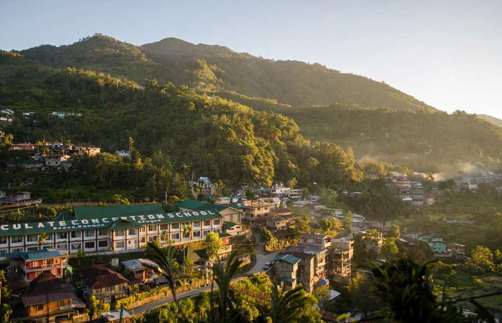

Baguio is the Cordillera trip you can do on a short break: a taxi ride to the next stop, a café on every corner and a hotel within walking distance of dinner. Sagada is the one you work for. It means a six-hour bus ride up the Halsema Highway, a registration desk, a local guide for most of the sights and a town that goes quiet soon after dark.
Both are cool, both sit in the northern Luzon highlands, and both get called "the mountain trip", so people often treat them as substitutes. They are not. One is a city with pine trees, and the other is a small town built around caves, cliffs and early-morning hikes. Picking the wrong one costs you a day of travel and a lot of patience.
This guide compares the two on the things that actually decide a trip: how long it takes to arrive, what a normal day looks like, what it costs, when the weather helps, and where each place falls short. It ends with a plan for doing both in about six days.

The short answer
Pick Baguio if you have two or three days, want good food and an easy schedule, or are travelling with children or older relatives. Pick Sagada if you have at least three days, like caves and sunrise hikes, and do not mind long rides and early alarms. Do both only if you can spare about six days, because the road between them eats most of a day.
The city base
- Cafés, restaurants, markets and a night market close together
- Parks, gardens and viewpoints reachable by taxi
- Easy to shorten, extend or rearrange
The mountain town
- Caves, hanging coffins, waterfalls and sunrise hikes
- Registration and accredited guides for the main sights
- Fewer places to sleep and eat, and a quiet evening
Baguio vs Sagada at a glance
Baguio and Sagada side by side
Planning estimates, not promises
| Topic | Baguio | Sagada |
|---|---|---|
| Feel | Busy highland city with traffic, malls and markets | Small mountain town, quiet after dark |
| Known for | Parks, pine trees, cafés, the night market, Panagbenga | Sumaguing Cave, hanging coffins, sunrise views, waterfalls |
| Best for | First visits, families, food trips, short breaks | Hikers, cave-goers, slow trips with early starts |
| From Manila | About 4 to 6 hours by bus | About 12 hours on an overnight direct bus, or Baguio first and about 6 more hours |
| Getting around | Taxis, jeepneys and walking | On foot in town, guides and shared vans for the sights |
| Where to sleep | Hotels, inns, apartments and transient houses at every price | Inns, guesthouses and homestays, a smaller choice |
| Time needed | 2 to 3 days | 3 to 4 days |
| Weak spot | Traffic and weekend crowds | The long journey and weather-dependent plans |
City energy or mountain quiet
Baguio: a city that happens to be cold
Baguio behaves like a city first. There are jammed streets, a public market, schools, shopping centres and a downtown that never fully empties, and the pine-covered hills are the backdrop rather than the activity. A normal day can run from a park walk to a museum or garden, then dinner on or near Session Road, without needing a plan.
That makes it forgiving. If it rains, you move indoors. If a family member is tired, you go back to the hotel for an hour. The price is crowding: weekends, long holidays and Panagbenga fill the roads and the popular viewpoints, and a place that looks ten minutes away on the map can take half an hour.
Sagada: a town where the day is built around the landscape
Sagada works the other way round. The centre is small, and most of what you came for lies outside it: a cave, a cliff path, a trail to a waterfall, a ridge at dawn. Days start early, with a sunrise walk or a guided trip, and finish with a simple meal and an early night.
It is not untouched. Holiday weekends bring crowds and long registration lines. But the scale stays small, and if you want evenings of restaurants and shops, Sagada will feel slow. If you want a reason to put the phone away, it will feel right.
Things to do
The best of Baguio
Baguio sightseeing goes best when you group stops by area, so a taxi is not doing a zigzag across town. These are the stops that earn their time.
- Burnham Park and Burnham LakeThe city's central park, with bikes, playgrounds and boats on the lake. It is the easiest first stop and works at any time of day.
- Botanical Garden and the new ArboretumThemed gardens, a flower walkway and the Cordillera Village on Leonard Wood Road. The Arboretum next door opened in October 2026, and a single ticket covers both.
- Camp John HayPine forest, lawns, trails and the Bell Amphitheater. Give it a slow morning instead of a photo stop.
- Mines View, Good Shepherd and Wright ParkA lookout over the Benguet mountains, the convent that sells ube jam, and a pine-shaded park with a reflecting pool that leads to the gates of The Mansion. All three fit into one east-side outing.
- Tam-awan VillageAn artists' village on the west side with rebuilt Cordillera houses, small galleries and a viewing point. A calm way to meet the region's culture before Sagada.
- Session Road and the night marketBakeries and old restaurants by day, and second-hand clothes, jackets and snacks along Harrison Road after dark.
If Baguio is your base for three days, our Baguio 3-day itinerary for first-timers lays out which area to cover each day.
The best of Sagada
Sagada's attractions are fewer and bigger, and almost all of them involve a guide, a walk or a van ride. Plan two main activities a day at most.
- Sumaguing CaveThe big cave most first-timers choose. Expect boulders, short drops and wading through cold pools, and wear sandals with straps or sturdy shoes. Allow roughly one and a half to two and a half hours.
- Lumiang Burial Cave and the Cave ConnectionOld wooden coffins stack up at the entrance of Lumiang. The Cave Connection links it to Sumaguing through crawls and an underground river, and it is the harder option.
- Echo Valley and the hanging coffinsA short walk past St. Mary's Church and the cemetery leads to coffins set into the cliffs, a burial tradition of the Kankana-ey people. These are sacred sites, so keep your voice down and your hands off.
- Sunrise at Marlboro Hills or KiltepanBoth are early starts, around 4:30 AM, followed by a short walk. A sea of clouds is possible but never guaranteed, so do not build your whole trip around one morning.
- Bomod-ok FallsA tall waterfall with a pool at its base, reached by a demanding trek through mountain farmland. Save your energy for the climb back.
- The town centre and its cafésThe municipal hall, tourism office and main bus stop sit together, with coffee and yogurt places close by. It is the right place to spend a rest afternoon.
Our Sagada caves and hanging coffins visitor guide covers how booking works, what each cave involves and how to behave at the burial sites.
Scenery
Baguio's scenery is woven into the city. Pine trees line roads and parks, and the high spots give you a look over rooftops and ridges. Camp John Hay is the easiest place to feel the pine forest without committing to a hike, and the gardens give you greenery between meals.
Sagada's views are larger and harder won. The land around the town is ridges, valleys, limestone cliffs, farmland and forest, and the best angles come on foot or from a winding road. If all you want is cool air and pine trees, Baguio covers it. If you want to look out over a mountain range, Sagada does it better.
Food
Baguio wins on choice. Between the market, the bakeries, the cafés and the night market, you can eat well for several days without repeating a meal. Sagada has fewer places and shorter opening hours, but it offers a few things you will not find in the city.
In short, Baguio is better for variety, café hopping and shopping for pasalubong. Sagada is more interesting if you want mountain food and can live with a smaller menu.
Weather and best time to go
Both places are cooler than the lowlands, but mountain weather can turn quickly, and the right month for one is not always the right month for the other.
December to February
Coldest, and busiest in Baguio
This is the stretch of crisp mornings, with Baguio dawn readings that can drop close to 10°C in January. It is also when Christmas, New Year and Panagbenga fill the city, so book rooms early and expect slower roads.
November to April
Sagada's dry season
The best window for caves, valley walks and sunrise hikes. December to February is the coldest part, and Holy Week brings large crowds and registration lines that can take an hour or two.
May to October
Wet months in both
Cave rock turns slippery, leeches appear on the trails and Sumaguing can close after heavy rain. Landslides and road restrictions also return, so keep your dates flexible if you must travel.
Baguio copes with rain better, because it has indoor options: cafés, museums, markets and malls. Sagada is more exposed. A cloudy sunrise or a wet trail can change a whole day, so leave one open day in the plan, and do not stake the whole trip on a single viewpoint.
How to get there
Transport is the biggest difference between the two. Baguio is the easy one, and Sagada is reached by land only, over mountain roads.
Manila to Baguio
Bus, 4 to 6 hours
Several operators leave from Cubao, Pasay, PITX and other terminals. A regular air-conditioned seat runs about ₱650 to ₱750 one way.
Manila to Sagada
Overnight direct bus, about 12 hours
Coda Lines runs evening departures from Cubao by way of Banaue and Bontoc, with a fare around ₱1,100 on the latest listing.
Already in the Cordillera
Banaue to Sagada, about 3 hours
Buses, vans and jeepneys cross via Bontoc, mostly leaving before noon. It suits anyone adding the rice terraces.
If you are heading to Baguio first, our guide to bus routes, fares and terminals from Manila to Baguio compares the operators and which terminal to use.
Baguio to Sagada, step by step
The Halsema Highway
Baguio to Sagada by bus
FareAbout ₱390DeparturesMostly morningsRoadMountain highway
-
Step 1
Go to the right terminal
Buses to Sagada leave from the Dangwa Terminal and the Lizardo Transit Terminal, depending on the operator. If you arrive in Baguio late, sleep close to the terminal so you can catch the first bus.
-
Step 2
Arrive early, especially on weekends
Most trips leave in the morning and the early buses fill fast on weekends and holidays. Ask at the terminal the day before, since schedules shift.
-
Step 3
Ride the Halsema Highway
The road climbs through Benguet and passes Atok, where a marker sits at 2,255 metres. Take motion-sickness tablets if you need them, and choose a seat toward the front.
-
Step 4
Register as soon as you arrive
The bus stops in front of the Municipal Hall. The Municipal Tourist Information Center is nearby, and that is where you register and arrange guides.
Check the road before you go. In early September 2026, Halsema Highway was down to one lane at Caliking in Atok, and Kennon Road was closed to non-residents. Closures come and go, so look up the latest DPWH Cordillera advisory the day before you leave.
The Banaue and Bontoc route
Another way in goes through Banaue and Bontoc. It adds a day to the trip but fits well if you also want the rice terraces. The cheapest version is a jeepney from Banaue to Bontoc, then a second one to Sagada, and a direct bus, van or jeepney is available on most mornings. The whole ride takes around three hours, and most vehicles leave before noon.
Is the road trip worth it?
For most travellers, yes. The Halsema ride is the first taste of Sagada, with ridges, vegetable farms and mountain villages out of the window. Treat it as part of the trip, not a transfer, and leave the afternoon free so that a delay does not wreck your plans.
If you drive yourself, make sure the car is in good shape and the driver is comfortable with steep, winding roads. Avoid unfamiliar sections at night, in fog or in heavy rain, and ask your accommodation about parking before you arrive, because space in the town centre is limited.
Getting around and guides
In Baguio you can manage without much planning. Taxis and jeepneys connect most places, and downtown is walkable, but slopes and traffic make short distances slow. Do one area each day: the centre on foot, the east side with Mines View and Camp John Hay, and the edges of the city for Tam-awan and La Trinidad.
Sagada runs on a different system. The town centre is walkable, but the main sights lie outside it, and you cannot simply turn up and go. You register at the Municipal Tourist Information Center, pay a registration and environmental fee of around ₱100, keep the ID card or receipt, and book an accredited guide. Guides are charged per group, not per person, so arriving around 7 AM gives you a better chance of joining other travellers and splitting the cost.
Plan fewer things per day than you would in Baguio. Tours have set arrangements, and some are limited by the day's group size or the weather. The easiest way to get this wrong is to arrive in the afternoon and expect to start a cave trip.
Where to stay
Baguio has the wider market: hotels, inns, serviced apartments, condominium rentals, transient houses and resort-style properties. For a first visit, stay around Burnham Park and Session Road, so you can walk to most meals and take taxis to the other sights. Camp John Hay and the Mines View side suit a quieter, greener stay, but you will rely on taxis.
Sagada has a smaller set of inns, guesthouses and homestays. Staying near the town centre puts the tourism office, bus stop and restaurants within walking distance, while places farther out can be quieter, though you will need a plan for getting to tours. Nights are cold, so check what blankets and hot water the place offers before you book.
In both places, book ahead for Christmas, New Year, Holy Week and long weekends, and for Panagbenga in Baguio. In Sagada, rooms and guides disappear first, and a last-minute arrival leaves you with very little choice.
What it costs
Neither is cheap once you add up transport, but they spend money in different places. Baguio's costs come from rooms and meals, and Sagada's come from guides, vans and the long ride in.
For a rough daily budget in Baguio, excluding your room and bus fare, these are the levels most visitors fall into.
Around ₱800–1,200 a day
Street food and carinderia meals, jeepneys and shared taxis, free parks and one paid garden.
Around ₱1,500–2,500 a day
Restaurant meals, a café stop, taxis between areas, a few entrance fees and some pasalubong.
₱3,000 and up a day
Sit-down meals at the known restaurants, taxis everywhere and a bigger pasalubong haul.
Sagada does not fit tidy tiers, because the cost depends on how many sights you book and how many people share a guide. A group of four sharing guides and vans pays far less per head than a solo traveller, so look for companions at the tourism office early in the day.
The cheapest-looking room can hide extra costs. A bed outside the centre may mean daily transport, and a Sagada plan with several guided trips can cost more than a plain town stay. Compare the whole trip, not the nightly rate.
How many days you need
Baguio in three days
- Day 1The centre on foot
Burnham Park, Session Road, the public market and the night market after dark.
- Day 2The east side
Mines View, Good Shepherd, Wright Park, the Botanical Garden and Camp John Hay, grouped so the taxi stays short.
- Day 3The edges of the city
Tam-awan Village in the morning, then La Trinidad's strawberry farm or a long café lunch.
Sagada in four days
- Day 1Arrive and register
Check in, register at the tourism office, then walk to Echo Valley in the afternoon and look around the town.
- Day 2The caves
Sumaguing in the morning, with a look at the Lumiang entrance if the schedule allows. Rest in the afternoon.
- Day 3Sunrise and a long hike
Marlboro Hills or Kiltepan at dawn, then Bomod-ok Falls if your legs are willing. Keep one of the two for another day if the weather is wet.
- Day 4Slow morning and departure
Coffee, a last walk and an early bus out. This day is also your spare day if rain moved something earlier.
Both together: a six-day plan
A combined trip needs at least five days, and six is more comfortable. This one starts in Baguio, so you get the easy days first and the long bus ride in the middle.
Day 1 · BaguioArrive and keep it light
- MorningBus into BaguioDrop your bags and rest after the climb
- AfternoonBurnham Park and Session RoadA flat, easy walk after the ride
- EveningNight market snacksLayers on, since evenings are cool
Day 2 · BaguioThe east side
- MorningMines View, Good Shepherd and Wright ParkGo early, before the tour vans arrive
- AfternoonBotanical Garden and Camp John HayPine trails and the Bell Amphitheater
- EveningA long café dinnerRest your legs before the ride north
Day 3 · BaguioCulture, pasalubong and a plan
- MorningTam-awan VillageA calm preview of Cordillera culture
- AfternoonPublic market and pasalubongBuy souvenirs now so you do not carry them over the mountains
- EveningSleep near the bus terminalConfirm tomorrow's departure time at Dangwa or Lizardo
Day 4 · Road to SagadaUp the Halsema Highway
- MorningEarly bus to SagadaAbout six hours, longer if the road is restricted
- AfternoonRegister and check inPay the registration fee and keep your receipt
- Late afternoonWalk Echo ValleyA short guided trip once you have settled in
Day 5 · SagadaThe cave day
- MorningSumaguing Cave with a guideWet and slippery, so wear shoes with grip
- AfternoonLemon pie and a restKeep the afternoon light
- EveningDinner in townEat early, since options thin out after dark
Day 6 · SagadaSunrise and the way out
- DawnMarlboro Hills or KiltepanLeave around 4:30 AM if the weather looks clear
- MiddayHead outLeave a long buffer for any onward connection
If your flight home leaves the same day, add a seventh day in Sagada instead of racing the road. A spare day also covers the weather that can move your sunrise or cave trip.
Tips before you go
For Baguio
Small habits that keep a city break relaxed.
One area a day
Baguio's roads are narrow and jam easily. Staying in one part of the city each day saves hours in taxis.
Go early to the viewpoints
Mines View and the gardens get crowded by mid-morning on weekends. Being out by 7:30 makes a real difference.
Bring a jacket
Mornings and evenings are cool all year and cold from December to February.
Check prices before you pay
Agree on lake boats and rides first, ask for a receipt where one is offered, and keep small bills for market stalls and taho.
For Sagada
Before you leave the city
- Register on arrivalGo to the Municipal Tourist Information Center first, pay the fee, and keep the receipt for every activity.
- Use accredited guides onlyDo not enter a cave or burial site on your own, and avoid anyone offering an unofficial trip.
- Respect the burial sitesDo not touch or lean on coffins, ask before taking photographs, and leave quietly if a ritual is under way.
- Bring cashSmall businesses may not take cards or e-wallets, and ATMs can be offline or empty.
- Pack for a wet dayA rain jacket, a dry bag, a headlamp and shoes with real grip are worth the space, whatever the month.
- Do not plan a tight connectionFog, rain and landslides can slow the road, so avoid a same-day flight right after the bus.
So, which one?
- Choose Baguio ifYou have two or three days, want a flexible schedule with good food and shopping, or are travelling with children or older relatives.
- Choose Sagada ifYou have three or more days, like caves, sunrise hikes and quiet evenings, and are happy to plan around guides and the weather.
- Do both ifYou can spare about six days and would like the city first and the mountains after, with the Halsema ride in between.
Families with small children, older travellers and anyone with limited mobility will usually find Baguio the easier choice. Sagada can suit many travellers, but its best-known activities involve steep paths, wet rock and long walks.
Hikers, photographers and people who like early mornings will probably remember Sagada longer. Food trips, café days and a relaxed city break are Baguio's ground. They are different trips on the same mountain range, and if you ever have the time for both, take the city first so the bus ride north feels like a reward.


Comments
No comments yet. Been here recently? Share a tip or ask a question.
Leave a Reply